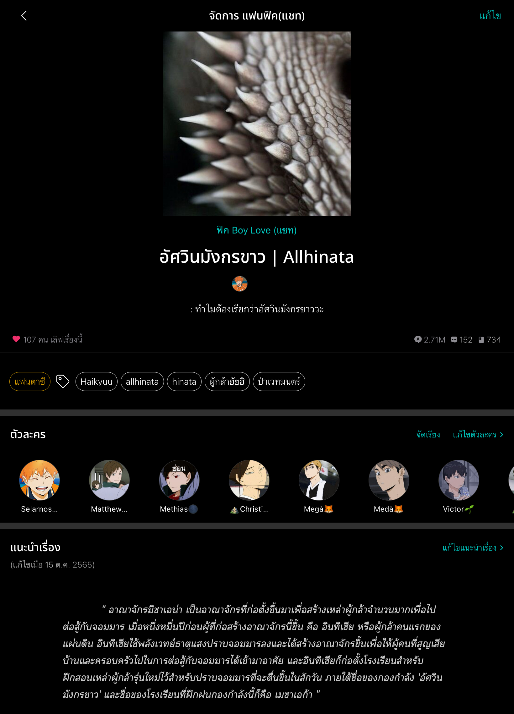
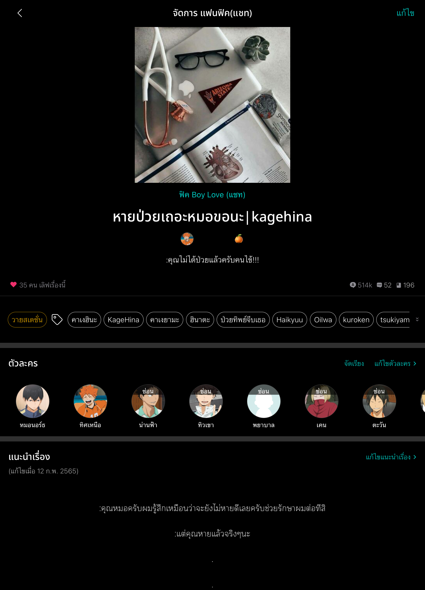

Sample fiction

ชื่อเรื่อง : อัศวินมังกรขาว | Allhinata
ผู้แต่ง : จักรราศี
จำนวนตอน : 15 ตอน
เรื่องย่อ : หลังจากผ่านไปหนึ่งหมื่นปี อาณาจักรที่เคยสงบสุขอย่างอาณาจักรมิซาเอน่าที่สงบสุขก็ต้องพบกับการรุกรานของเหล่าปีศาจที่กำลังปะทุขึ้นอีกครั้ง หลังการกลับมาของจอมมาร ผู้กล้าที่กลับชาติมาเกิดจึงต้องเข้าร่วมการฝึกฝนร่วมกับกลุ่มคนที่เกลียดชังตนเองเพื่อโค่นจอมมาร เรื่องราวที่เต็มไปด้วยความท้าทาย ตื่นเต้น และน้ำตานี้จะมีตอนจบเป็นอย่างไร

ชื่อเรื่อง : หายป่วยเถอะหมอขอนะ | kagehina
ผู้แต่ง : chibi chan🍊
จำนวนตอน : 17 ตอน
เรื่องย่อ : เมื่อเน็ตไอดอลคนดังอย่างทิศเหนือต้องเข้าผ่าตัดเนื้องอกในสมอง ทำให้ได้พบกับคุณหมอสุดหล่ออย่างหมอนอร์ธที่เป็นติ่งทิศเหนือตัวยง เรื่องราวความรักของไอดอลที่คอยตามก่อกวนหมอจึงเริ่มขึ้น